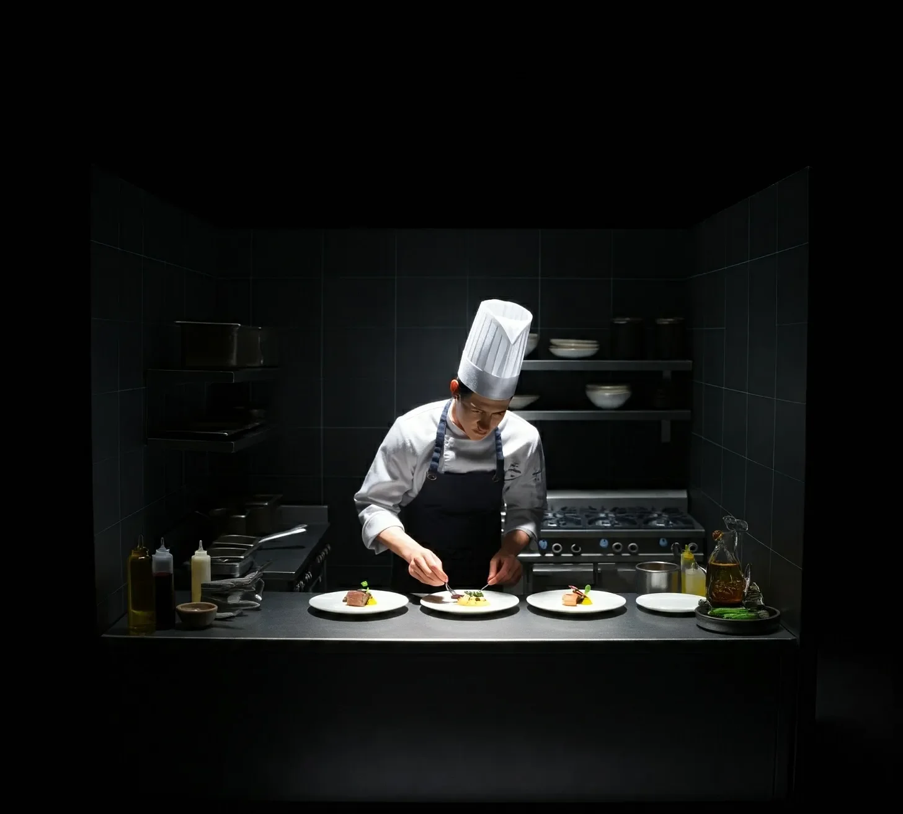

제프리는 닳고 닳은 ‘프로페셔널 쉐프’ 요리책을 살펴보며 대체 비율을 찌푸린 얼굴로 확인했다. 책에는 송아지 정강이 치수를 형사로 대체하는 방법이 애매모호하게 설명되어 있었다.
[Jeffrey consulted his dog-eared copy of 'The Professional Chef,’ frowning at the substitution ratios. The book was frustratingly vague about converting veal shank measurements to detective.]
중요한 저녁 서비스 때 즉흥적으로 요리하는 것은 그를 항상 불안하게 만들었지만, 이번에는 그렇게 할 수밖에 없었다.
[He’d have to improvise, though improvisation always made him anxious during important dinner services.]
“계속 꿈틀거리시면 안 되겠는데요,” 그는 자신의 미장플라스를 완전히 망치고 있는 모리스 형사를 꾸짖었다.
[“You really must stop squirming,” he chided Detective Morris, who was making his mise en place absolutely impossible.]
“이 정강이를 제대로 자르려고 하는데, 계속 몸을 비틀어대시는 바람에 제 브루노와즈가 완전히 들쭉날쭉해지고 있잖아요.”
[“I’m trying to achieve the proper cross-cut on these shanks, and your constant wiggling is making my brunoise completely uneven.”]
주방은 전문가급 장비들로 빛났다 - 대부분의 자동차보다 비싼 라캉슈 레인지, 거울처럼 반짝이는 구리 바닥의 모비엘 냄비들, 그리고 외과 의사도 부러워할 만한 칼 컬렉션이 있었다.
[The kitchen gleamed with professional-grade equipment - a Lacanche range that cost more than most cars, copper-bottomed Mauviel pans that could double as mirrors, and a knife collection that would make a surgeon envious.]
제프리는 자신의 이니셜이 새겨진 앞치마를 매만졌다. 그것은 그의 플레이팅 기술에 의문을 제기했던 무례한 음식 평론가였던 마지막 손님이 준 선물이었다.
[Jeffrey adjusted his monogrammed apron, a gift from his last dinner guest - a rather rude food critic who had questioned his plating technique.]
“자, 이제,” 그는 레시피 카드를 확인하며 중얼거렸다. “제대로 된 오소 부코 알라 밀라네제를 위해서는 그레몰라타, 화이트 와인, 육수, 소프리토가 필요하고…” 그는 주 재료를 바라보며 잠시 멈췄다. “그리고 물론, 우리의 단백질인데, 원래는 송아지 고기여야 하지만 대신… 음, '방목 형사'라고 부르죠.”
[“Now then,” he muttered, consulting his recipe cards, “for a proper osso buco alla Milanese, we need: gremolata, white wine, stock, soffritto…” He paused, eyeing his main ingredient. “And of course, our protein, which would typically be veal but will instead be… well, let’s call you 'free-range detective.’”]
모리스 형사는 재갈을 문 채로 항의하는 소리를 냈다.
[Detective Morris made muffled sounds of protest through his gag.]
“아이고, 제발요,” 제프리는 미르푸아를 깍둑썰기하며 눈을 굴렸다. “당신 콜레스테롤 수치는 아마 끔찍할 텐데, 향신료를 듬뿍 넣어 균형을 맞춰볼게요.”
[“Oh please,” Jeffrey rolled his eyes while dicing his mirepoix, “your cholesterol levels are probably atrocious, but we’ll balance that with plenty of aromatics.]
"그나저나, 이렇게 계속 발버둥 치시는 건 우리가 얻으려는 부드러운 식감에 전혀 도움이 안 되는데요. 드라이 에이징이란 말도 못 들어보셨나요?”
[Though I must say, all this struggling is really working against the tenderness we’re trying to achieve. Haven’t you heard of dry-aging?“]
준비 작업은 체계적인 정확도로 진행되었다. 제프리는 특히 자신의 칼질 실력이 자랑스러웠다 - 당근, 셀러리, 양파는 정확히 1/4인치 크기로 깍둑썰기되어 완벽한 브루노와즈가 되었고, 비록 그의 단백질 선택에는 의문을 제기할 수 있겠지만, 옛 스승들도 이 칼질만큼은 자랑스러워할 것이다.
[The prep work proceeded with methodical precision. Jeffrey was particularly proud of his knife work - the carrots, celery, and onions were diced to exactly ¼ inch, a perfect brunoise that would make his old instructors proud, even if they might question his choice of protein.]
"정말 아이러니한 게 뭔지 아세요?” 그는 상큼한 피노 그리지오로 냄비를 디글레이징하며 물었다. “사실 저는 요리학교에서 정육 과목에서 낙제했거든요. 믿기 힘드시겠지만, 너무 소심해서요. 하지만 지금 저를 보세요 - 제 기술이 상당히 발전했다고 할 수 있지 않나요?”
[“You know what’s really ironic?” he asked, deglazing his pan with a crisp Pinot Grigio, “I actually failed my butchery module in culinary school. Too squeamish, if you can believe it. But look at me now - I’d say my technique has improved considerably, wouldn’t you?”]
그의 '청중'은 고집스럽게 무심한 태도를 보였다.
[His captive audience remained stubbornly unappreciative.]
“진짜 어려운 점은,” 제프리는 숙련된 솜씨로 소프리토를 조리하며 계속했다, “골수를 제대로 녹이는 거예요. 송아지 정강이야 한 방법이 있지만, 형사 뼈는…” 그는 고개를 저었다. “콜라겐 함량이 완전히 다르거든요.”
[“The real challenge,” Jeffrey continued, working his soffritto with practiced care, “is getting the marrow to render properly. Veal shanks are one thing, but detective bones…” He shook his head. “The collagen content is completely different.]
"시행착오를 거치면서 브레이징 시간을 상당히 수정해야 했죠. 솔직히 말하자면, 대부분 실패였지만요. 첫 번째 디너 파티는 좀… 질겼거든요.”
[I had to modify the braising time significantly through trial and error. Mostly error, if I’m being honest. That first dinner party was rather… chewy.“]
타이머가 울리자, 제프리는 그레몰라타를 준비하기 시작했다. "레몬 제스트, 파슬리, 마늘 - 마무리의 삼위일체죠. 그런데 우리끼리 말인데요,” 그는 자신의 주 재료에게 음모를 꾸미듯 속삭였다, “저는 오렌지 제스트를 살짝 넣어요.”
[A timer chimed, and Jeffrey began preparing his gremolata. “Lemon zest, parsley, garlic - the holy trinity of finishing touches. Though between you and me,” he whispered conspiratorially to his main ingredient, “I add a touch of orange zest.]
"정통은 아니지만, 법 집행관 특유의 잡내를 상쇄하는 데 아주 좋더라고요.”
[It’s unorthodox, but I find it cuts through the gaminess of law enforcement quite nicely.“]
소스의 농도를 조절하고 있을 때 초인종이 울렸다. 보안 모니터를 통해 영장을 든 첸 형사가 보였다. 제프리는 한숨을 쉬며 여분의 앞치마를 집어 들었다.
[The doorbell rang just as he was adjusting his sauce consistency. Through the security monitor, he spotted Detective Chen, warrant in hand. Jeffrey sighed, reaching for his spare apron.]
"이거 운이 좋네요,” 그는 육수 양을 확인하며 생각에 잠겼다. “마침 이 레시피를 2인분으로 늘릴 수 있을까 고민하던 참이었는데. 그런데,” 그는 더 큰 브레이징 냄비를 신중하게 고르며 덧붙였다, “재료 목록을 '방목 형사'에서 '형사 듀오'로 수정해야겠네요.”
[“How fortuitous,” he mused, checking his stock levels. “I was just thinking this recipe could easily scale up to serve two. Though,” he added, carefully selecting a larger braising pan, “I suppose I should update my ingredient list from 'free-range detective’ to 'detective duo.’”]
결국, 그는 위층으로 향하며 생각했다. 실력 있는 셰프라면 누구나 최고의 요리는 적절한 1인분 크기와 세심한 재료 조합에서 나온다는 것을 알고 있다.
[After all, he reasoned while heading upstairs, any chef worth their salt knew that the best dishes always came down to proper portion size and careful ingredient pairing.]
그리고 이 둘은 분명 충분히 오래 함께 일해왔기에 서로 보완적인 풍미가 발달했을 것이다.
[And these two had clearly been working together long enough to have developed complementary flavor profiles.]
부셰 부인은 실크 냅킨으로 입가를 닦으며 오소 부코의 마지막 한 조각을 음미했다.
[Madame Boucher dabbed her lips with a silk napkin, savoring the last morsel of her osso buco.]
“제프리가 오늘 정말 대단한 솜씨를 보여줬어요,” 그녀는 동석자에게 속삭였다. “고기가 뼈에서 저절로 떨어질 정도예요 - 우리의 친애하는 형사가 생전보다 접시 위에서 더 많이 저항한 것 같긴 하지만요.”
[“Jeffrey has outdone himself tonight,” she whispered to her companion. “The meat simply falls off the bone - though I dare say our dear detective put up more of a fight on the plate than he did in life.]
"그레몰라타의 오렌지 제스트는 영감적인 터치네요. 공포의 잔향을 완벽하게 가려주어요.”
[The orange zest in the gremolata is an inspired touch. Quite masks the lingering taste of fear.“]
언더그라운드 에피큐리언의 음식 평론가 해리슨 웰스는 까다로운 식인종들을 위한 극비 뉴스레터에 가죽 수첩으로 꼼꼼히 메모를 했다.
[Harrison Wells, food critic for the Underground Epicurean, a highly exclusive newsletter for discerning cannibals, made careful notes in his leather-bound journal.]
"셰프 제프리의 오소 부코 해석은 대체 단백질 조리에 대한 탁월한 이해를 보여줍니다. 분명 자유롭게 방목되어 스트레스로 질겨진 형사의 선택은 덜 능숙한 손에서는 재앙이 될 수 있었을 텐데요.”
[“Chef Jeffrey’s interpretation of osso buco demonstrates a masterful understanding of alternative protein preparation. The choice of detective - clearly free-range and stress-toughened - could have been disastrous in less capable hands.]
"하지만 오랜 브레이징 시간과 세심한 온도 조절 덕분에 권위와 부드러움이 완벽하게 균형을 이룬 요리가 탄생했습니다. 소스에서 느껴지는 미묘한 경찰 표준 가죽 홀스터의 향이 흥미로운 감칠맛을 더해줍니다.”
[However, the extended braising time and careful temperature control resulted in a dish that perfectly balances authority with tenderness. The subtle hint of standard-issue police-issue leather holster in the sauce adds an intriguing umami note.“]
은퇴한 외과 의사이자 오랜 단골인 엘리자베스 박사는 정육의 해부학적 정확성에 특히 감명을 받았다.
[Dr. Elizabeth, retired surgeon and longtime patron, found herself particularly impressed with the anatomical precision of the butchery.]
"단면 절단이 완벽히 수술적이네요,” 그녀는 은제 집게로 골수를 발라내며 동석자들에게 말했다.
[“The cross-sectional cuts are absolutely surgical,” she remarked to her tablemates while extracting marrow with a silver pick.]
“그런데 우리 주인장이 꽤나 장난스럽게 둔부 근육을 대접했다는 점을 지적하고 싶네요 - 아마도 책상 뒤에 앉아있기만 하는 법 집행관들의 성향에 대한 날카로운 논평이 아닐까 싶어요.
[Though I must point out that our host has rather cheekily served us the gluteus maximus - a rather pointed commentary, I suspect, on law enforcement’s tendency to sit behind desks.]
함께 나온 드미글라스 소스에서 느껴지는 경찰서 커피와 관료적 좌절감의 풍미는 그야말로 영감적이에요.”
[The accompanying demi-glace, infused with what I detect to be notes of precinct coffee and bureaucratic frustration, is simply inspired.“]